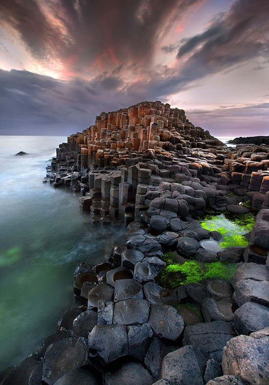

Giants causeway
The Giant's Causeway is an area of about 40,000 interlocking basaltcolumns, the result of an ancient volcanic fissure eruption. It is located in County Antrim on the north coast of Northern Ireland, about three miles (5 km) northeast of the town of Bushmills. The Road of Giants belongs to the National Foundation, which organizes the access of tourists and is engaged in the protection of this object. The Road of Giants is the most popular attraction in Northern Ireland. From afar, basalt slopes are suitable for large organs with thousands of black pipes. The Pavement of Giants is sometimes called the Path of Giants, and this is natural - after all, just looking at it, it is clear that if it served someone dear, then this someone was very big and strong.Legend
The legend of the origin of stone prisms According to an ancient Celtic legend, stone prisms on the shore of the Irish coast were built by a fairy-tale hero, the giant Finn Mac Cummal. Once he wanted to face off with a one-eyed Gol, who lives on the island of Staffa, located on the other side of the strait. Unfortunately, Finn Mac Cummal was very afraid of water, and he did not have a suitable means on which to swim across the water space. Then he decided to build a road across the sea straight to the island of Staffa. He paved it for 7 days, dragging faceted columns, thrusting them deep into the ground and tightly pressing each other so that they would not bend under the weight of his body. Upon completion of the construction, the giant was very tired and decided to rest before a difficult battle. At this time, the cyclops noticed a stone bridge that came from nowhere in the middle of the sea. He sensed danger and decided to attack his enemy first. Crossing the bridge, he found a dwelling and began to break in the door. It would be hard for Finn Mac Cummal, if not for the resourcefulness of his wife. She wrapped her husband in a sheet and only then launched the cyclops into the house. To the furious screams, the woman calmly replied that the owner was not at home, and their son was sleeping in the cradle. Gol was seriously scared when he saw the size of the child and imagined the height of his father. He fled the island in terror, destroying the bridge built behind him so that the enemy would not overtake him.
